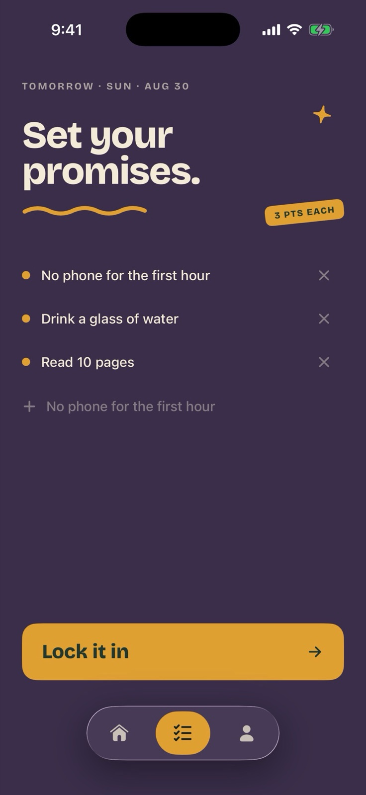
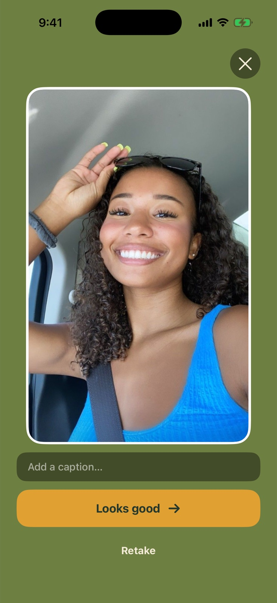
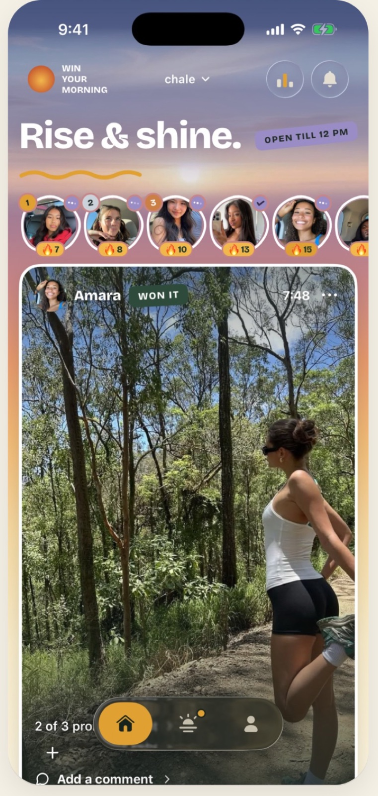
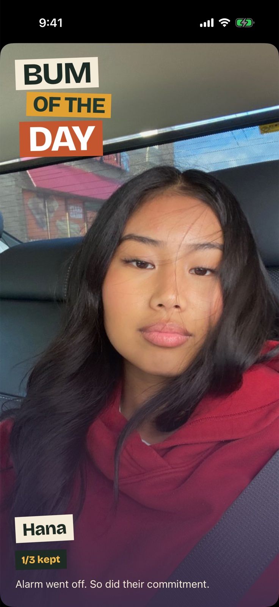
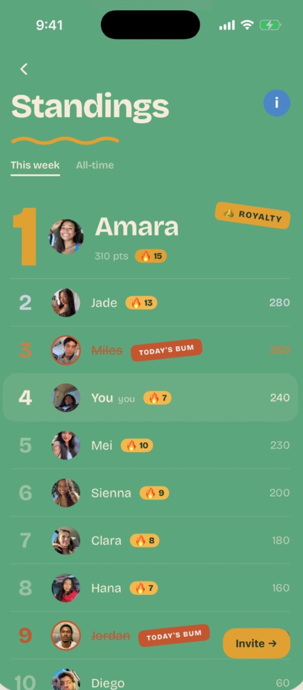
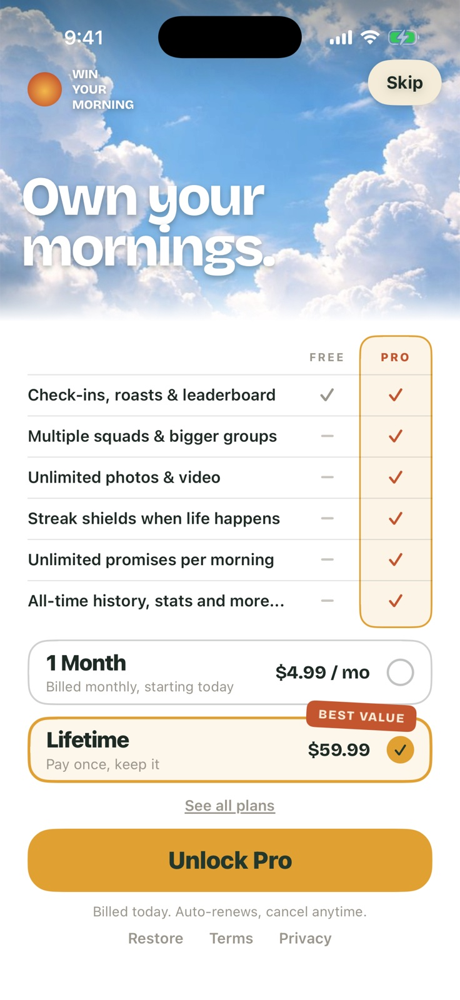

✓Read 10 pages
your squad sees it tonight
✓No phone for the first hour
open till 12 pm
won it · 6:48
✓3 of 3 kept
Jadewow, what a morning routine
Diegowho runs trails at 7 am
🔥😤👏Mei, Sienna +3
WIN YOUR MORNING now
Hana bummed their morning. Go look.Amara is roasting Hanagirl, you're not a serious person 💀
Diego is roasting Hana4 alarms and slept through all of them 😭
🔥
15day streak
🏆
+3 per promise
this week's champAmara
✓Streak shields
✓Unlimited photos & video
✓More squads
the night before
promise it tonight.
the morning
prove it with a photo.
the squad
see who’s actually up.
bum of the day
sleep in, get roasted.
standings
top the board.
go pro